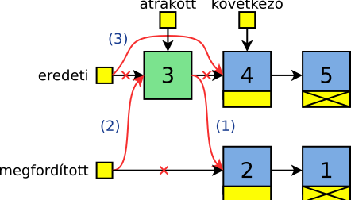
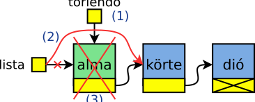
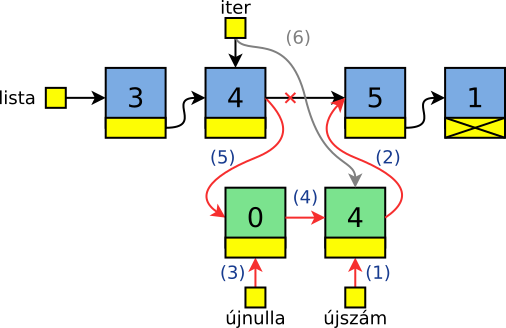
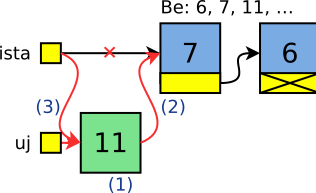

Gyakorlat, 10. hét: láncolt listák
Czirkos Zoltán · 2021.08.24.
Láncolt listák építése és kezelése.
Láncolt listák használata. Az óra célja az, hogy mindenki gyakorlatot szerezzen a listák használatában – különösen abban, hogyan kell a pointereket az egyes beszúrás, törlés stb. műveleteknél állítani. Ehhez minden esetben javasolt rajz készítése!
Felkészülés a gyakorlatra:
- A listákról szóló előadás anyagának megértése.
- A dinamikus memóriakezelésről szóló előadás átismétlése.
Fordítsunk meg egy listát az elemei átláncolása által! Írjunk egy programot, amely beolvas számokat 0-ig, és kiírja a keletkező listát eredeti sorrendjében (és ezáltal a számokat eredeti sorrendjükben), továbbá kiírja a megfordítottat is.
Megoldás
Ez egyszerűbb, mint gondolnánk. Ha mindig a lista elejéről elveszünk egy elemet, és a megfordított lista elejére betesszük azt, akkor a lista éppen megfordul! Az eredeti lista szép lassan elfogy, és mikor ez megtörténik, akkor a keletkező lista kész.
/* Megfordit egy parameterkent kapott listat, es visszater
* a megforditott valtozattal.
* Vigyazat, az eredeti lista elveszik! A fuggveny nem uj
* listat epit, hanem az eredeti lista elemeinek felhasznalasaval
* epiti az uj listat. Igy a kapott pointert legjobb az eredeti
* lista eleje pointerbe visszairni:
* szamok = lista_megfordit(szamok);
*/
Szam *lista_megfordit(Szam *lista) {
Szam *eredeti = lista;
Szam *megforditott = NULL;
while (eredeti != NULL) {
Szam *atrakott = eredeti, *kovetkezo = eredeti->kov;
atrakott->kov = megforditott; /* uj elejere be */ /* 1 */
megforditott = atrakott; /* 2 */
eredeti = kovetkezo; /* regibol kihagy */ /* 3 */
}
return megforditott;
}A teljes program letölthető innen: listamegfordit.c.
Adott egy szavakat tartalmazó lista. Töröljük ki belőle a négybetűseket!
Megoldás
A törlésnél a törölt elem előtti elemben lévő mutatót kell módosítani, hogy átugorja a törölt elemet. Ezért legjobban akkor járunk, ha lemaradó pointeres ciklust írunk. Így a törlés könnyen elvégezhető:
- Az előző (lemaradó pointer által mutatott) elem következő pointerét a törlendő utánira állítjuk.
- Ezek után a törlendő elem felszabadítható.
Két dologra kell figyelnünk. Egyik az, hogy törlés esetén a mozgó pointert még a felszabadítás előtt léptetnünk kell a következő elemre. Ez azért fontos, mert a törlendő elem tartalmazza a következő elem címét, vagyis ezt törlés után már nem tudnánk megtenni.
Másik dolog pedig az, hogy előfordulhat az az eset is, amikor az első elemet kell törölni. Ilyenkor nem az őt megelőző elem következő pointerét kell módosítani (hiszen nincs őt megelőző elem), hanem a lista elejét mutató változót.
Egy elem törlése esetén a lemaradó pointer nem módosul a következő elemre lépéskor. Csak akkor, ha törlés nélkül megyünk tovább a ciklusban. A törlést végző függvény:
/* Torli a negy betus szavakat a listabol. Visszater a lista
* eleje mutatoval, amely valtozhatott, hiszen a lista elejen is
* lehetett negy betus szo. Hasznalata:
* szavak = torol_negybetus(szavak);
*/
Szo *torol_negybetus(Szo *lista) {
Szo *lemarado = NULL;
Szo *mozgo = lista;
while (mozgo != NULL) {
if (strlen(mozgo->szo) == 4) { /* törölni? */
Szo *torlendo = mozgo;
mozgo = mozgo->kov;
if (lemarado == NULL) { /* első elem? */
lista = torlendo->kov;
} else { /* köztes elem */
lemarado->kov = torlendo->kov;
}
free(torlendo);
} else { /* nincs törlés */
lemarado = mozgo;
mozgo = mozgo->kov;
}
}
return lista;
}A teljes program letölthető innen: torles11.c.
Adott egy egész számokat tartalmazó lista. Írjunk be minden páros szám után egy nullát és a számot magát. Vagyis legyen a 2,3,4,5 listából a 2,0,2,3,4,0,4,5 lista.
Megoldás
Ez könnyű, hiszen beszúrni egy adott elem után könnyen tudunk. Végigmegyünk a listán, ha az páros, akkor beszúrunk utána egy nullát és saját magát. Vigyázat, két buktató is van! Ha ilyen sorrendben tennénk, akkor fordított lenne az eredmény – vagyis előbb saját magát, és utána a nullát kell beszúrni. (Ehhez inkább külön változókat használ a lenti kód.) Figyelni kell arra is, hogy a beszúrás után az iterátort léptessük, nehogy a következő körben megtaláljuk a nullát vagy a beszúrt számot (hiszen ezek is párosak). Kettővel léptetjük előre, ezáltal olyan állapotot előidézve, mintha a ciklusváltozó a beszúrt elemre mutatna.
/* A listában minden páros szám után beszúr egy nullát,
* és még egyszer magát a számot.
*/
void lista_202(Szam *lista) {
for (Szam *iter = lista; iter != NULL; iter = iter->kov)
if (iter->szam % 2 == 0) {
Szam *ujszam, *ujnulla;
ujszam = (Szam*) malloc(sizeof(Szam));
ujszam->szam = iter->szam;
ujszam->kov = iter->kov;
ujnulla = (Szam*) malloc(sizeof(Szam));
ujnulla->szam = 0;
ujnulla->kov = ujszam;
iter->kov = ujnulla;
/* 2-t ugrunk, es utana meg jon a 3. ugras */
iter = iter->kov->kov;
}
}Az 1-2. lépést, vagyis a szám és a pointer másolását összevonhatnánk egy lépésbe:
*ujszam = *iter;Struktúra értékadással, ugyanis mind a számot, mind a pointert, vagyis az egész struktúrát másoljuk ott.
A teljes program letölthető innen: lista202.c.
Írjunk programot, amely a billentyűzetről számokat olvas be, egészen 0-ig. Írjuk ki ezután a beolvasott számok közül azokat, amelyek az átlagnál kisebbek! A sorrend nem számít.
Megoldás
Tudjuk, hogy a számokat el kell tárolni, mivel csak a legutolsó szám után derül ki az, hogy melyeket kell kiírni. A „tetszőlegesen sok” miatt listát kell alkalmaznunk. Kérdés, hogy egyszeresen vagy kétszeresen láncolt kell legyen. Mivel a kiírás sorrendje nem kötött, válasszunk egy egyszeresen láncolt listát, annak is a legegyszerűbb beszúró függvényét: a lista elejére beszúrást!
A fentiek alapján a lista:
typedef struct Szam {
int szam;
struct Szam *kov;
} Szam;A főprogram szinte nem különbözik attól, mintha tömbbel csinálnánk:
int main(void) {
Szam *lista = NULL;
int beolv;
scanf("%d", &beolv);
while (beolv != 0) {
lista = elejere(lista, beolv);
scanf("%d", &beolv);
}
double atlag = listaatlag(lista);
for (Szam *iter = lista; iter != NULL; iter = iter->kov)
if (iter->szam < atlag)
printf("%d ", iter->szam);
felszabadit(lista);
return 0;
}Ha nem használnánk külön változót a beolvasott számnak, hanem egyenesen a listába szeretnénk beolvasni, akkor itt most nagy bajban lennénk. Ugyanis a beolvasás előtt már létre kellene hozni egy listaelemet, amit aztán ki kellene törölni, ha nullát olvastunk be.
A listába beszúrás: mindig az elejére tesszük az új számot (ezért amúgy fordított sorrendben lesznek benne):
/* uj elemet szur be a megadott lista elejere.
* visszater az uj, megvaltozott lista eleje
* mutatoval. a hasznalata:
* l = beszur(l, 5);
*/
Szam *elejere(Szam *lista, int szam) {
Szam *uj = (Szam*) malloc(sizeof(Szam)); /* 1 */
uj->szam = szam;
uj->kov = lista; /* 2 */
return uj; /* 3 */
}A lista elemeinek átlaga végülis ugyanolyan, mintha tömbünk lenne. Csak itt meg is kell számolnunk az elemeket:
/* a megadott listan levo szamok atlagat adja */
double listaatlag(Szam *lista) {
double szum = 0;
int db = 0;
for (Szam *iter = lista; iter != NULL; iter = iter->kov) {
szum += iter->szam;
db++;
}
return szum / db; /* double/int oke */
}A teljes program letölthető ide kattitva: szamoklistaban.c.